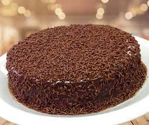

<!DOCTYPE html>
<html lang="pt-br">
<head>
    <meta charset="UTF-8">
    <meta name="viewport" content="width=device-width, initial-scale=1.0">
    <title>Bolo de Chocolate</title>

</head>
<body style="background-color: rgb(223, 171, 97);"></body>
    <a href="./../index.html">Voltar para o menu</a>
<body>
    <section>
    <h1>Bolo de chocolate</h1>
    <h3><B>INGREDIENTES</B></h3>
    <h4>Massa</h4>
    <ul>
        <li>3 ovos</li>
        <li>1 e 1/2 xícara de açúcar</li>
        <li>2 xícaras de farinha de trigo</li>
        <li>1 xícara de chocolate em pó ou achocolatado</li>
        <li>1/2 xícara de óleo</li>
        <li>1 colher de fermento em pó</li>
        <li>1 pitada de sal</li>
        <li>1 xícara de água quente</li>
    </ul>
    <h4>Cobertura</h4>
    <ul>
        <li>4 colheres de leite</li>
        <li>1/2 xícara de chocolate em pó</li>
        <li>1 colher de manteiga</li>
        <li>1 xícara de açúcar</li>
        <li>1/2 xícara de óleo</li>
    </ul>
    </section>
    <section>
    <h4>MODO DE PREPARO: <br> Massa</h4>
    <ol>
        <li>Em um liquidificador, bata os ovos, o açúcar, o óleo, o achocolatado e a farinha de trigo.</li>
        <li>Despeje a massa em uma tigela e adicione água quente e o fermento, misturando bem.</li>
        <li>Despeje a massa em uma forma untada e asse em forno médio-alto (200 graus), preaquecido, por 40 minutos.</li>
        <li>Desenforme ainda quente.</li>
        </ol>
    <h4>Cobertura</h4>
    <ol>
        <li>Em uma panela, leve todos os ingredientes ao fogo até levantar fervura.</li>
        <li>Despeje ainda quente em cima do bolo.</li>
    </ol>
    </section>
    
    <footer>
        <p>Autora: Kelly Santana</p>
    </footer>

    
    
</html>